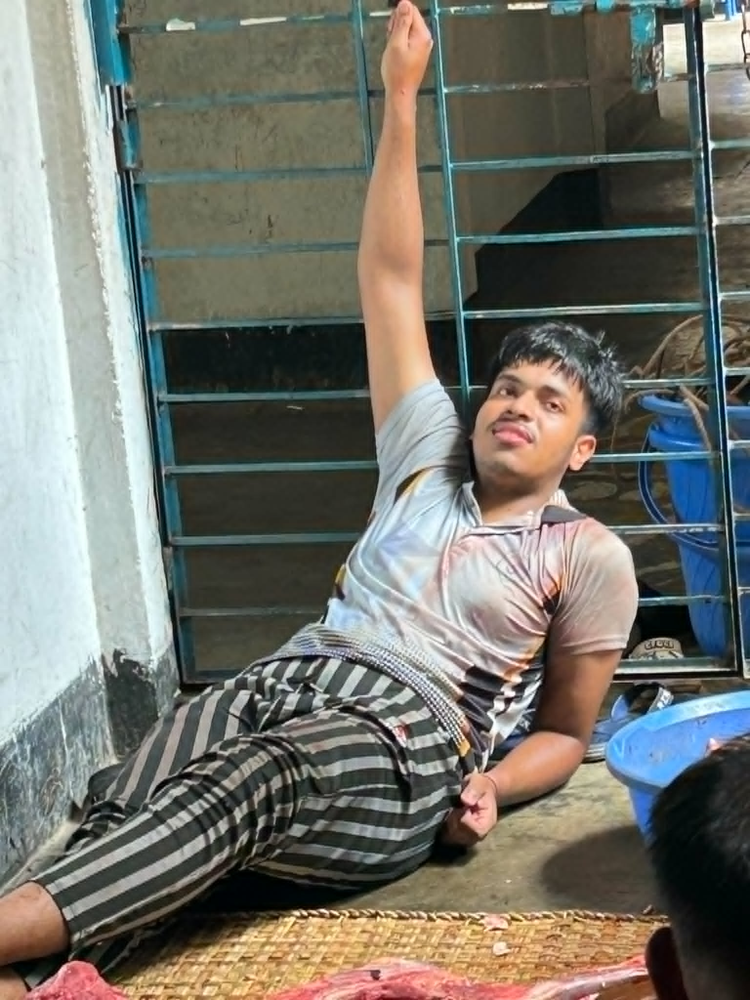

10% Myth. 90% Excuses. 100% Mursalin.
Need to humble Mursalin? Generate a certified roast instantly.
Why is Mursalin late or missing today? Let's check the database.
Current Status: Thinking about starting a task, but will probably open YouTube instead.
Last updated: 1 minute ago (and it won't change anytime soon).